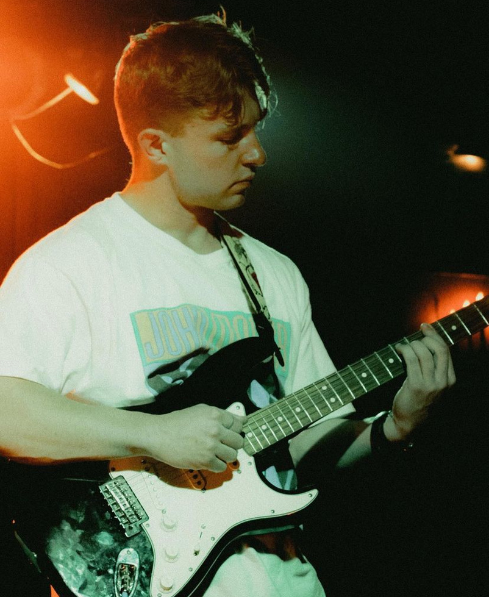
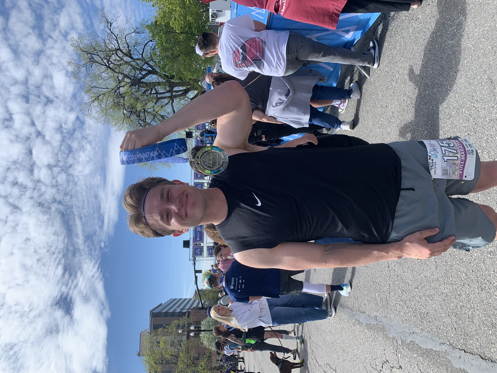
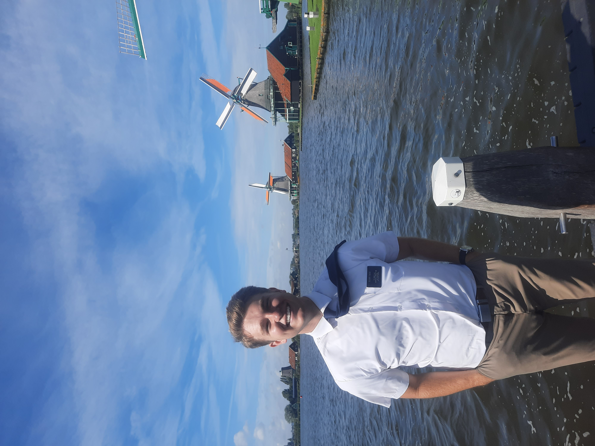

My passions: music, running, service, and of course, Michigan football



Music
I have played lead guitar in a band since January, and I have loved it. There is truly no feeling like ripping a guitar solo in front of 300 people; but it is also incredibly nerve-wracking. I play in a band under the name "Dawson Wayne", and I have performed with them in venues such as Velour (Provo), the Boardwalk (Orem), and Broadway Lofts (Salt Lake City).
My goal is to start my own band this fall.
Influences:
John Mayer
Favorite Album: Continuum
John Frusciante
Favorite Album: Californication
Eddie Van Halen
Favorite Album: Van Halen
Running
I love running! I first got into running in high school, when I ran sprints in track and field. On my church mission in Europe, I got into long-distance running--this was around the time that I set the goal to run a marathon around a year after I got home. 4/20/24 marked 9 months since I had come home, and I ran the Salt Lake City Marathon! I finished with a time of 4:17.
My goal is to run the St. George Marathon in October, and to bring my time down to 3:45. I'm going to do this by including more runs that range from 22-24 miles, and implement better recoveries.
I am fascinated by the Boston Marathon--I would like to attend someday. Click the link below to learn more about finishing times in the 2023 Boston Marathon.
My most meaningful service opportunity was my two-year mission for my church in the Netherlands. While I was there, I gained fluency in Dutch, taught people how they can come closer to God, and ate lots of Dutch stroopwafels.
My goal is to work with the Special Olympics this summer as a partner-athlete. As a partner-athlete, I will assist individuals with special needs in activities such as soccer, basketball, and running.
Goals & Ambitions
I have plans to apply to the Finance program at Brigham Young University, where I am a current undergrad student. I will also do the Healthcare Leadership minor.
I will start my career in hospital administration. I am going to work my way up to hospital president. I would especially like to be the president of a non-profit children's hospital if opportunity allows. Eventually, I would like to start my own skilled nursing home.
I will run a marathon in 3:30.
Most importantly, I will get married and have a family. I would like to settle in Idaho in the Boise area.